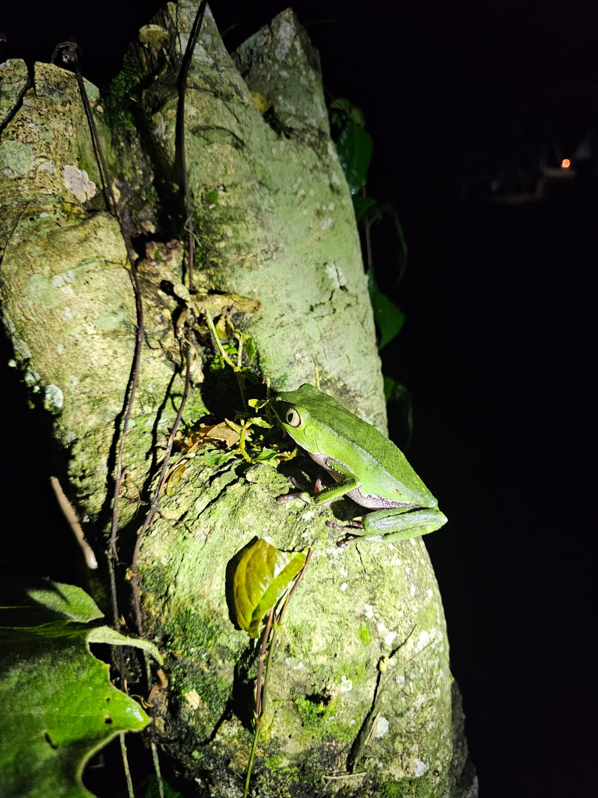
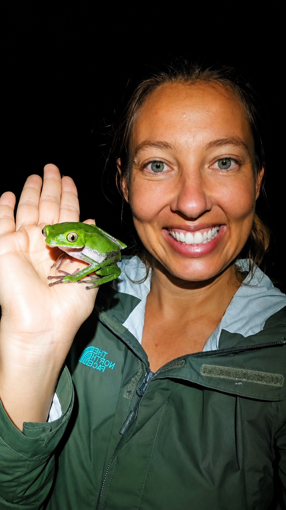

Brittany started working with Kambo in 2022 after a coach guided her to the medicine to help her through a brain tumor diagnosis. Having had a deep connection with frogs since childhood, she decided to give it a chance. After experiencing profound changes in her life, she felt drawn to learn more, eventually training with CKPI (Certified Kambo Practitioners International) and becoming a certified practitioner herself. This medicine is not for everyone, and anyone feeling the call will start with a discovery call before booking any appointments.
Kambo is the secretion of the Phyllomedusa Bicolor frog, also known as the Giant Monkey Tree Frog, native to the Amazon. Indigenous peoples have worked with this medicine for centuries for physical cleansing, mental clarity, and spiritual reset. Sixteen active peptides move through your system during the 20-minute session with the medicine, working to remove parasites, fungus, illness, and even emotional blockage through purging. On the other side is a clarity that most people describe as unlike anything else, brain fog lifted, clarity on vision and reflection, reduced cravings and old habits, more energy and alignment with intuition and natural flow.
This is not a recreational experience. It is not a psychedelic. It works fast and it works hard. People come to kambo for physical detox, emotional release, mental clarity, and to break through a place they have been stuck. Most describe being called to it rather than choosing it.

A required conversation before any session. We go through your health history, your reasons for coming, and exactly what to expect. No session is booked until this call is done.
You arrive at the property, settle into the studio space, drink your water (about 1.5 liters), and we sit together briefly before beginning. Nothing rushed.
We open with a full ceremony bringing in plant allies such as Sage and Mapacho, say a prayer to the medicine, and discuss the intention for your session. The application itself is brief. Small surface burns called dots are made on the skin (usually upper arm or ankle) and the medicine is applied. The medicine stays on for 20 minutes before being wiped off. We stay with you the whole time.
After the ceremony, when you are ready, we will have a resting place where you can relax, nap, and discuss your session while having tea and a light snack before leaving.
A follow-up call is included with every session. We check in on your integration in the days after and answer any questions that come up.
Do not book a session if any of the following apply to you:
This is not a complete list. We go through your full health history on the discovery call. If kambo is not right for you right now, Brittany will tell you plainly and point you toward something that is.

Every kambo engagement starts with a free call. No payment until you both agree it is the right move at the right time.
Book a call with Brittany